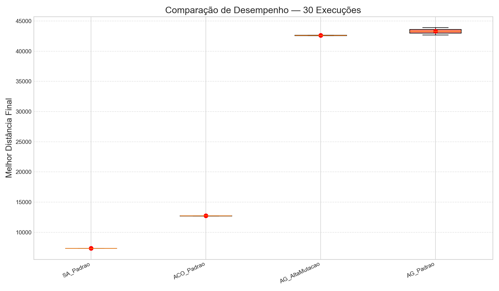
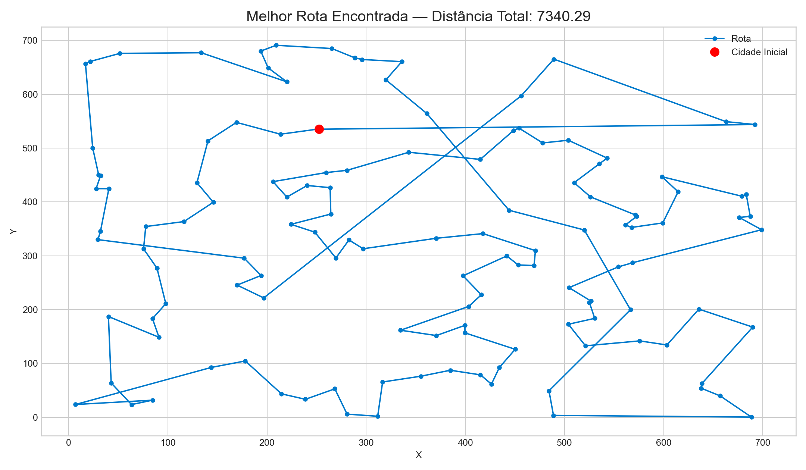
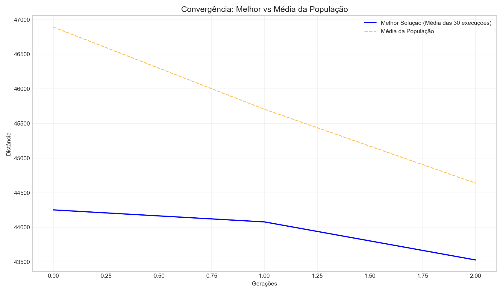
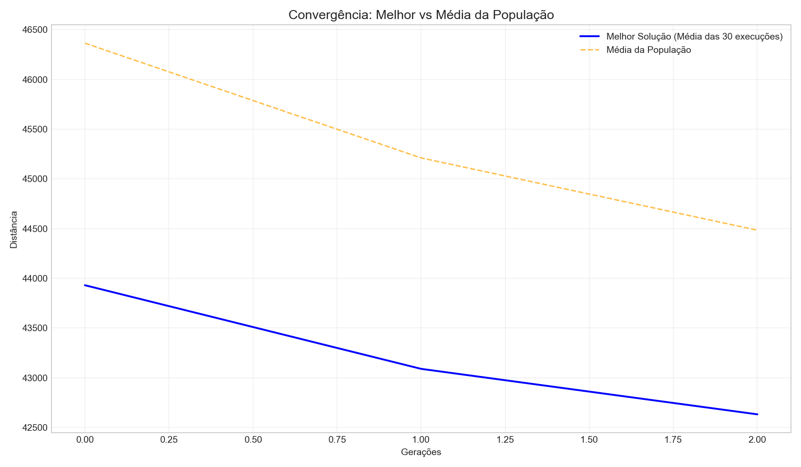
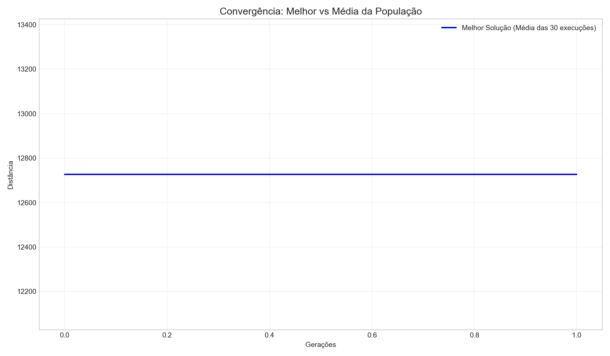
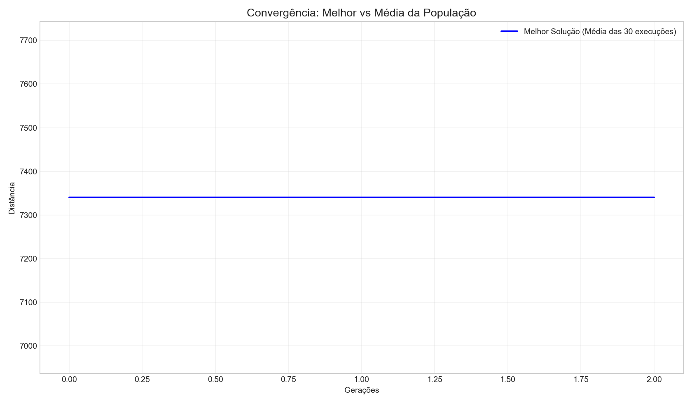

Experimento: GERAL

Distância: 7340.2937

AG_Padrao vs AG_AltaMutacao
Médias: 43312.66 vs 42631.18
p-value: 4.5953e-01 (Significativo? NÃO)
AG_Padrao vs ACO_Padrao
Médias: 43312.66 vs 12726.77
p-value: 1.2440e-02 (Significativo? SIM)
AG_Padrao vs SA_Padrao
Médias: 43312.66 vs 7340.29
p-value: 1.0647e-02 (Significativo? SIM)
AG_AltaMutacao vs ACO_Padrao
Médias: 42631.18 vs 12726.77
p-value: 2.3999e-04 (Significativo? SIM)
AG_AltaMutacao vs SA_Padrao
Médias: 42631.18 vs 7340.29
p-value: 9.1645e-04 (Significativo? SIM)
ACO_Padrao vs SA_Padrao
Médias: 12726.77 vs 7340.29
p-value: 2.1814e-03 (Significativo? SIM)



